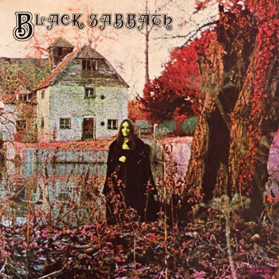

Black Sabbath,
Gêneros:
Duração 7 faixas, 33:24
Data de lançamento 13 Fevereiro 1970
Lista de Faixas
1 Black Sabbath
2 The Wizard
3 Behind the Wall of Sleep
4 N.I.B
5 Evil Woman
6 Sleeping Village
7 Warning
Black Sabbath é o álbum de estreia lançado pela banda inglesa do mesmo nome, lançado em 1970. Ainda que não tenha recebido muita atenção na época de seu lançamento, Black Sabbath tem sido, desde então, considerado como um dos discos mais importantes para o desenvolvimento do heavy metal. Existem várias versões deste álbum, dependendo da versão, com variação no nome das canções. A versão europeia tem "Evil Woman" como a primeira faixa do lado B, enquanto a versão americana tem "Wicked World". A versão remasterizada de 1996 tem as duas. A versão do Black Box já é mais organizada.